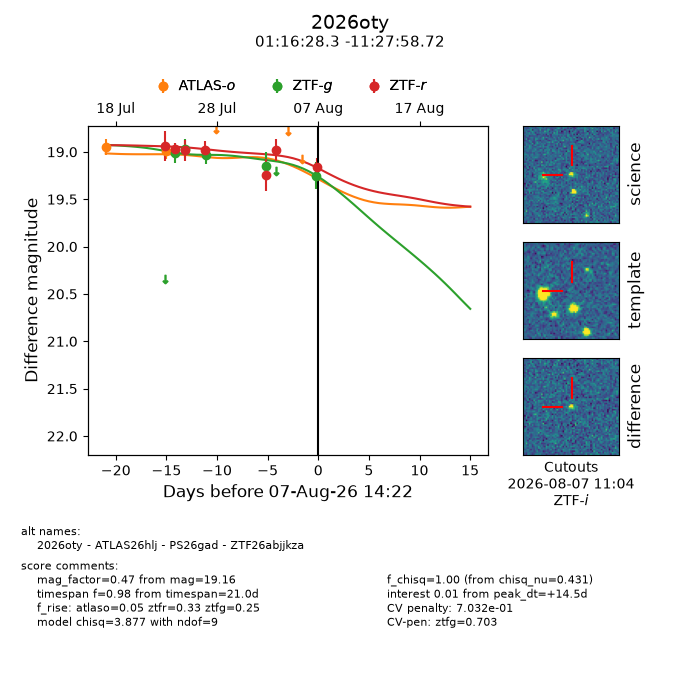
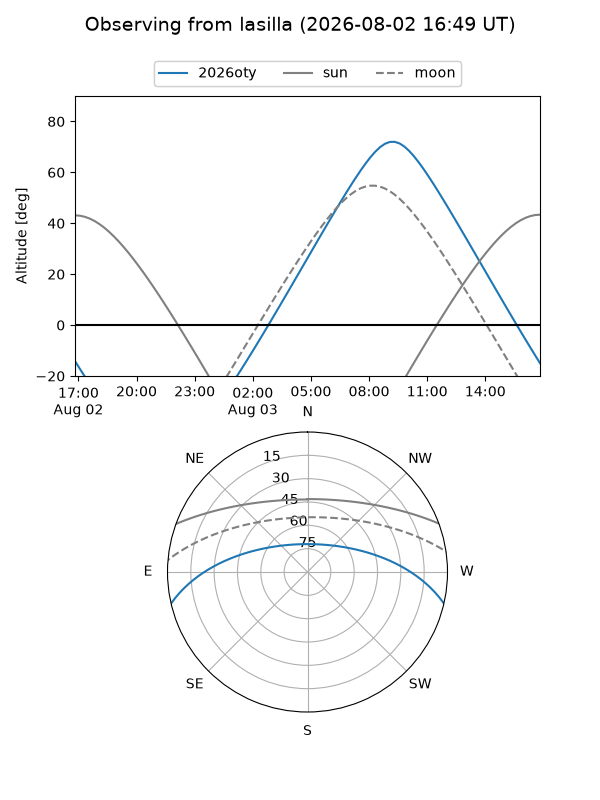
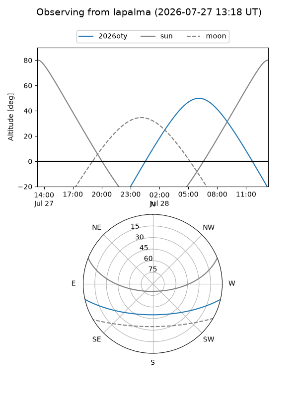
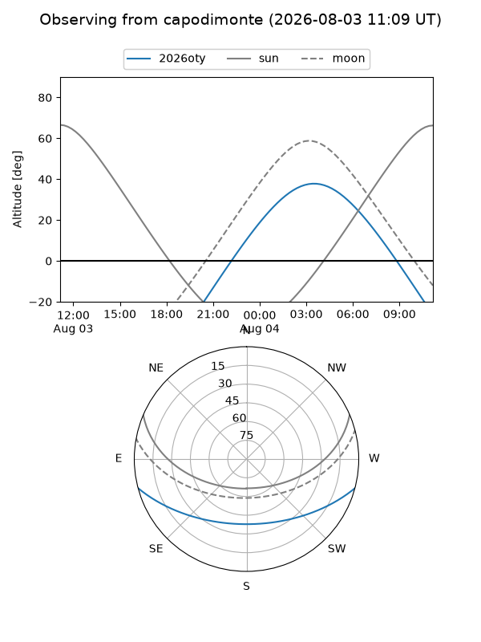
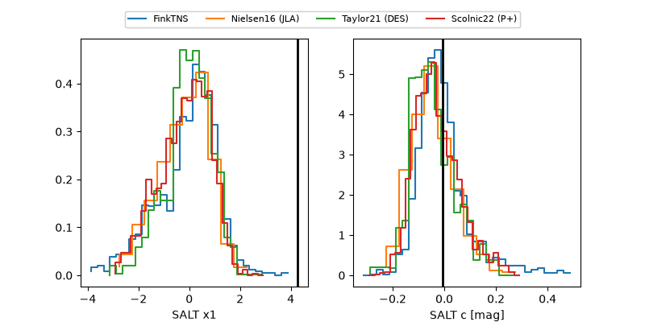

2026oty
Target 2026oty at 2026-08-07 14:24
Aliases and brokers:
FINK-ZTF: ztf.fink-portal.org/ZTF26abjjkza
Lasair-ZTF: lasair-ztf.lsst.ac.uk/objects/ZTF26abjjkza
ALeRCE-ZTF: alerce.online/object/ZTF26abjjkza
YSE-PZ: ziggy.ucolick.org/yse/transient_detail/2026oty
TNS name: wis-tns.org/object/2026oty
Direct TNS query: direct search
alt names
ZTF26abjjkza (ztf,fink_ztf)
2026oty (tns,yse)
ATLAS26hlj (atlas)
PS26gad (panstarrs)
Coordinates:
equatorial (ra, dec) = 19.1180,-11.46631
equatorial (HMS+DMS) = 01:16:28.31,-11:27:58.72
galactic (l, b) = (144.7184,-73.27022)
Flags:
TNS type: nan
peak dt: +14.5
likely cv: !!
Photometry:
last atlaso=18.99, ztfg=19.25, ztfr=19.16
2 atlaso, 5 ztfg, 7 ztfr detections
Lightcurve

Visibility



Additional plots
